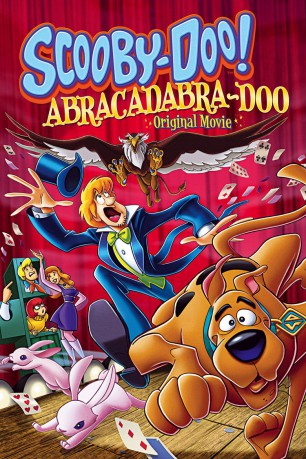

#2477 Scooby-Doo - Das Geheimnis der Zauber Akademie
Alternativ: Scooby-Doo! Abracadabra-Doo (Originaltitel)
 
 IMDB-Wertung: 7.2 / 10
IMDB-Wertung: 7.2 / 10  Metascore: 0
Metascore: 0 
Die fünf Detektive Velma, Shaggy, Daphne, Fred und Scooby Doo haben einen neuen Fall: Sie sollen die Zauberakademie, die Velmas jüngere Schwester Madelyn besucht, bewachen. Dort treibt seit einiger Zeit eine unheimliche Kreatur, die Vogel-Greif genannt wird, ihr Unwesen und versetzt die Schüler in Angst und Schrecken. Die Gestalt wurde bisher von niemandem bezwungen und ist ein Fabeltier: zur Hälfte Vogel und zur anderen Hälfte Löwe.
Jahr: 2010
Dauer: 75 Minuten
FSK:
Land: USA Studio: Warner PremiereTonspuren:
Untertitel:
Auflösung: SD (720x404) Größe: 584 MB
Genre: Animation/Trick, Familie, Mystery
Regisseur: Spike Brandt, Tony Cervone
Drehbuch: Alan Burnett, Paul Dini, Misty Lee, Alan Burnett, Joseph Barbera
Soundtrack: Robert J. Kral
Darsteller:
Datei: X:\Kinder Collections\Scooby-Doo\Scooby-Doo - Das Geheimnis der Zauber Akademie (2010, FSK, 720x404).mkv seit 12.11.2015
Festplatte: Kinder-Filme+Trick
 Es gibt insgesamt 17 Filme in der Gruppe 'Kinder Collections\Scooby-Doo'
Es gibt insgesamt 17 Filme in der Gruppe 'Kinder Collections\Scooby-Doo'